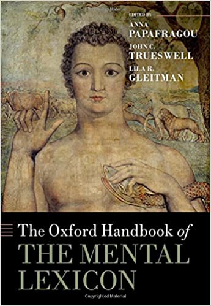
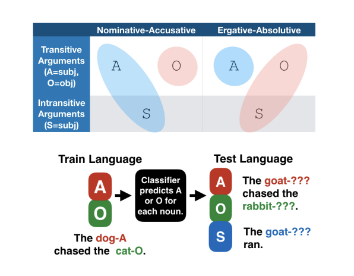
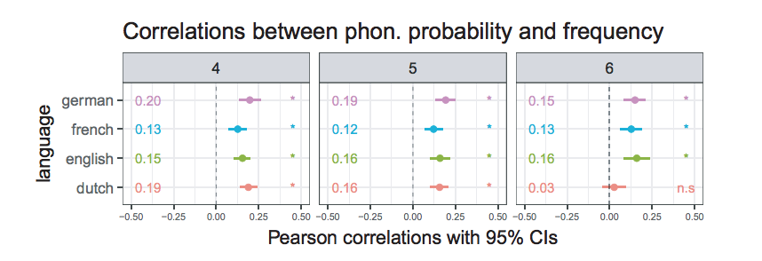
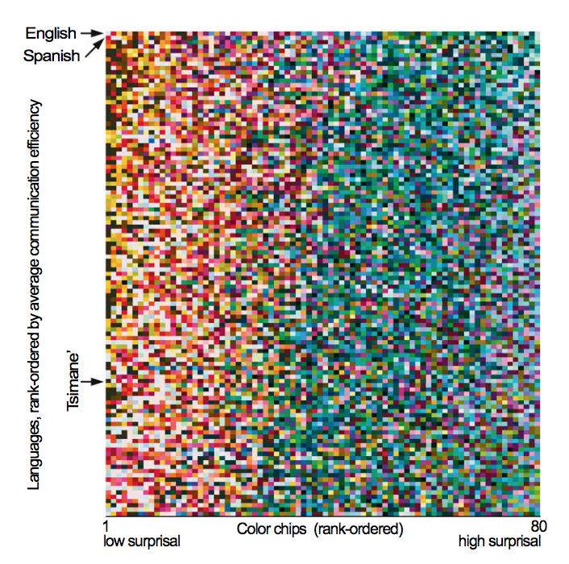
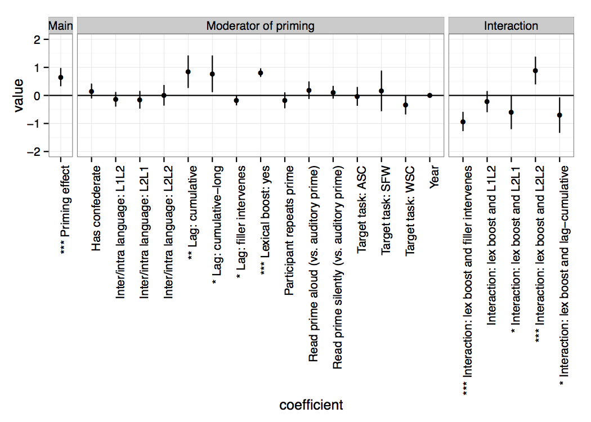
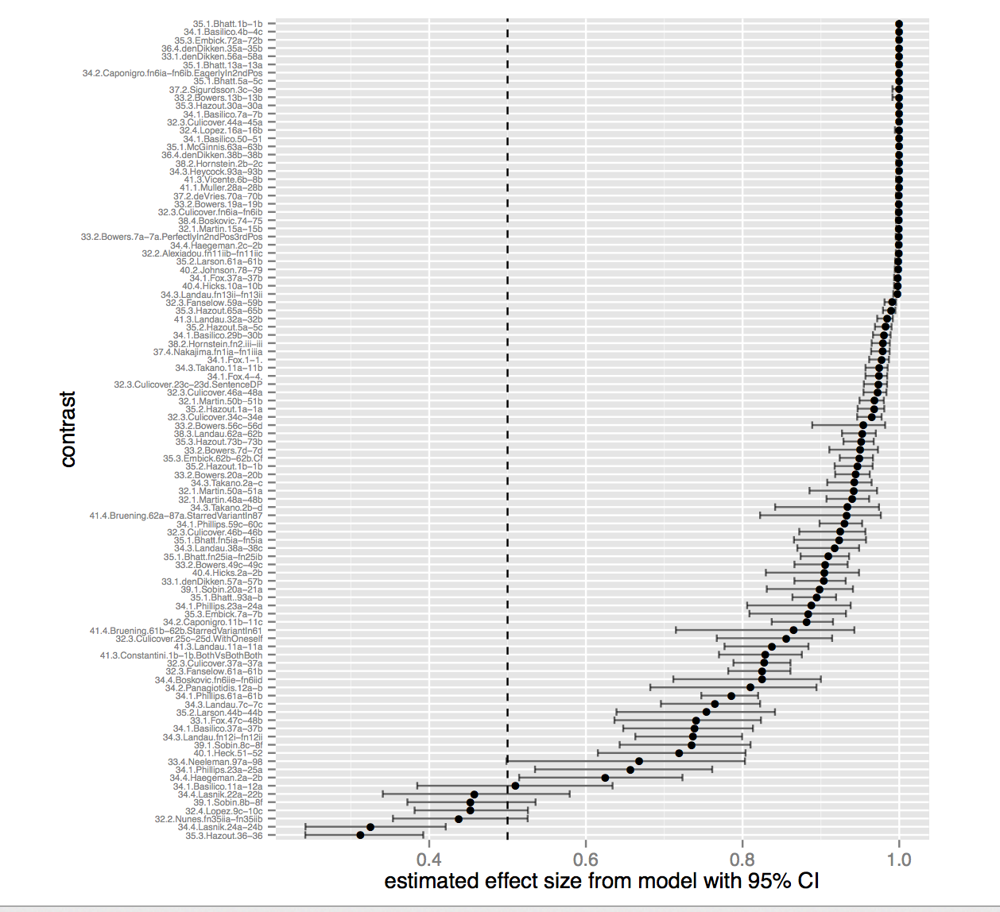
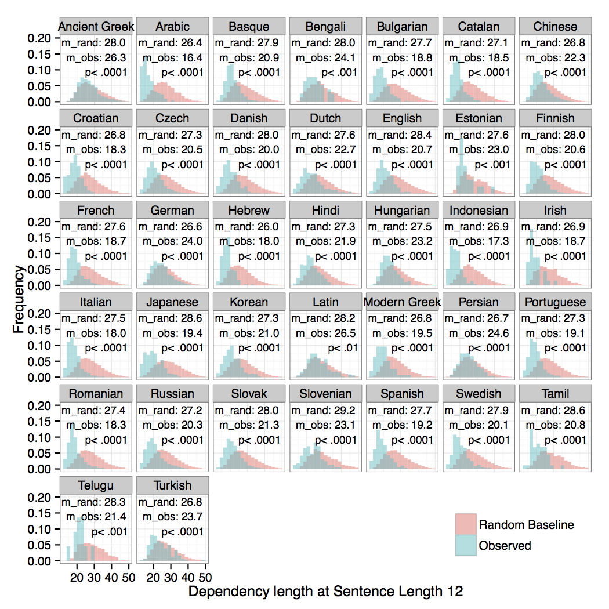

Kyle Mahowald
About me (him)
I am an assistant professor in linguistics at University of Texas at Austin (formerly at UCSB). I’m accepting students, am a member of the Computational Linguistics Research Group here at UT, and am part of the wider UT Austin NLP community. I work broadly on the topic of human communication. Specifically, I am interested in what modern computational language models can tell us about human language, how linguistic efficiency can explain things about linguistic behavior and typology, and a variety of other topcis in the cognitive science of language space. I also have interests in quantitative methods in the sciences, geared towards making science more robust, open, and equitable.
I graduated with my Ph.D. from Ted Gibson’s psycholinguistics lab in MIT’s Brain and Cognitive Sciences department and did my postdoc with Dan Jurafsky at Stanford. Before that, I was a Marshall Scholar at Oxford University studying linguistics with Mary Dalrymple and Aditi Lahiri. And before that I was an undergrad in English at Harvard.11 About me: Me is the first person object pronoun in English. It goes back to the accusative and dative in Old English and before that to an Indo-European pronoun that would probably remind you of me.
Articles
W. Liang, K. Mahowald, J. Raymond, V. Krishna, D. Smith, D. Jurafsky, D. McFarland, J. Zou. 2023. How random is the review outcome? A systematic study of the impact of external factors on eLife peer review.
J. Huang, Z. Wu, K. Mahowald, C. Potts. 2022. Inducing Character-level Structure in Subword-based Language Models with Type-level Interchange Intervention Training.
A. Diwan, L. Berry, E. Choi, D. Harwath, K. Mahowald. 2022. Why is Winoground Hard? Investigating Failures in Visuolinguistic Compositionality. Proceedings of EMNLP 2022.
A. Kaushal, K. Mahowald. 2022. What do tokens know about their characters and how do they know it?. Proceedings of NAACL 2022.
N. Rezaii, K. Mahowald, R. Ryskin, B. Dickerson, E. Gibson. 2022. A syntax–lexicon trade-off in language production. Proceedings of the National Academy of Sciences 119 (25), e2120203119.
V. Kovatchev, T. Chatterjee, V. Govindarajan, J. Chen, E. Choi, G. Chronis, A. Das, K. Erk, M. Lease, J. Li, Y. Wu, K. Mahowald. 2022. longhorns at DADC 2022: How many linguists does it take to fool a Question Answering model? A systematic approach to adversarial attacks. Proceedings of DADC 2022.
Oxford Handbook of the Mental Lexicon (with cover art by Blake).K. Mahowald, I. Dautriche, M. Braginsky, E. Gibson. 2022. Efficient communication and the organization of the lexicon. In Oxford University Press Handbook of the Mental Lexicon.
I. Papadimitriou, R. Futrell, K. Mahowald. 2022. When classifying grammatical role, BERT doesn’t care about word order… except when it matters. ACL 2022.
K. Mahowald, E. Diachek, E. Gibson, E. Fedorenko, R. Futrell. 2022. Grammatical cues are largely, but not completely, redundant with word meanings in natural language.
B. Schmidt, S.T. Piantadosi, K. Mahowald. 2021. Uncontrolled corpus composition drives an apparent surge in cognitive distortions. Letter to PNAS (in resposne to Bollen et al.).
A. Jones, W. Wang, K. Mahowald. 2021. A Massively Multilingual Analysis of Cross-linguality in Shared Embedding Space. EMNLP 2021.
T. Pimentel, I. Nikkarinen, K. Mahowald, R. Cotterell, D. Blasi. 2021. How (Non-) Optimal is the Lexicon?. NAACL 2021.
J. Rozner, C. Potts, K. Mahowald. 2021. Decrypting Cryptic Crosswords: Semantically Complex Wordplay Puzzles as a Target for NLP. NeurIPS 2021
Papadimitriou et al. on “Deep Subjecthood” trained probes on a subject vs. object classification task in multilingual BERT, transferring the performance of the probe across languages with different morphosyntactic alignment systems.I. Papadimitriou, R. Futrell, E. Chi, K. Mahowald. 2021. Deep Subjecthood: Higher-Order Grammatical Features in Multilingual BERT. EACL 2021.
ManyBabies2 Team. 2021 (submitted). Action anticipation based on an agent’s epistemic state in toddlers and adults.
T. Regev, X. Chen, A. Schipper, L. Bergen, K. Mahowald, E. Fedorenko. 2021. High-level language brain regions are sensitive to sub-lexical regularities .
K. Mahowald, D. Jurafsky, M. Norris. 2021. Concord begets concord: A Bayesian model of nominal concord typology. Proceedings of 95th LSA (2021).
D. Card, P. Henderson, U. Khandelwal, R. Jia, K. Mahowald, D. Jurafsky. 2020. With Little Power Comes Great Responsibility. EMNLP 2020.
K. Mahowald, G. Kachergis, M.C. Frank. 2020. What counts as an exemplar model, anyway? A commentary on Ambridge (2020). First Language.
E. Gibson, R. Futrell, S.T. Piantadosi, I. Dautriche, K. Mahowald, L. Bergen, R. Levy. 2019. How efficiency shapes human language. Trends in Cognitive Science.
Mahowald et al. “Word Forms Are Structured for Efficient” showed a robust correlation, across almost 100 world languages, between orthographic probability and word frequency. K. Mahowald, I. Dautriche, E. Gibson, S.T. Piantadosi. 2018. Word Forms Are Structured for Efficient Use. Cognitive Science.
Z. Mineroff, I. Blank, K. Mahowald, E. Fedorenko. 2018. A robust dissociation among the language, multiple demand, and default mode networks: evidence from inter-region correlations in effect size. Neuropsychologia, 119, 501-511.
Gibson et al. “Color naming across languages reflects color use” found that the information content of world color systems varied by language, but in all cases warm colors tended to be more information-rich than cool colors. In this plot, langauges are ordered by informativity of color system. E. Gibson, R. Futrell, J. Jara-Ettinger, K. Mahowald, S. Ratnasingam, M. Gibson, S.T Piantadosi, B.R. Conway. 2017. Color naming across languages reflects color use. PNAS. 114 (40), 10785-10790.
Gibson, E., Tan, C., Futrell, R., Mahowald, K., Konieczny, L., Hemforth, B., Fedorenko, E. 2017. Don’t underestimate the benefits of being misunderstood. Psychological science, 28(6), 703-712.
I. Dautriche*, K. Mahowald*, E. Gibson, S.T. Piantadosi. 2017. Words cluster phonetically beyond phonotactic regularities. Cognition, 163, 128-145.
I. Dautriche, K. Mahowald, E. Gibson, S.T. Piantadosi. 2017. Wordform similarity increases with semantic similarity: an analysis of 100 languages. Cognitive Science. doi: 10.1111/cogs.12453
Mahowald et al. “A meta-analysis of Syntactic Priming” analyzed 71 syntactic priming papers and found a robust effect of syntactic priming that was greatly magnified by lexical boost. This plot shows model coefficients for various moderators of the priming effect. K. Mahowald, A. James, R. Futrell, E. Gibson. 2016. A meta-analysis of syntactic priming. Journal of Memory and Language, 91, 5-27.
K. Mahowald, A. James, R. Futrell, E. Gibson. 2017. Structural priming is most useful when the conclusions are statistically robust. Behavioral and Brain Sciences, 40.
K. Mahowald, E. Fedorenko. 2016. Reliable individual-level neural markers of highlevel language processing: A necessary precursor for relating neural variability to behavioral and genetic variability. 2016. Neuroimage, 139, 74-93. doi: 10.1016/j.neuroimage.2016.05.073.
I. Blank, E. Fedorenko, Z. Balewski, and K. Mahowald. 2016. Syntactic processing is distributed across the language network. Neuroimage, 127, 307-323.
With SNAP Judgments, we show that small N experiments can be used to obtain quantitative linguistic data at low cost and with reliable results. This plot shows the distribution of effect sizes (which is large) for forced choice grammaticality judgments sampled from 100 examples in Linguistic Inquiry.K. Mahowald, P. Graff, J. Hartman, and E. Gibson. 2016. SNAP Judgments: A Small N Acceptability Paradigm (SNAP) for Linguistic Acceptability Judgments. Language, 92 (3), 619-635.
R. Futrell, K. Mahowald, E. Gibson. 2015. Large-Scale Evidence of Dependency Length Minimization in 37 Languages. Proceedings of the National Academy of Sciences. Published online before print August 3, 2015. doi: 10.1073/pnas.1502134112 22 See popular discussion in Science Magazine and on
RedditFutrell, Mahowald, Gibson (2015): The dependency lengths in natural languages are minimized relative to random baseline.
R. Futrell, K. Mahowald, E. Gibson. 2015. Quantifying Word Order Freedom in Dependency Corpora. Proceedings of Depling 2015.
R. Singh, E. Fedorenko, K. Mahowald, E. Gibson. 2015. Presupposition accommodation is costly only in implausible contexts. Cognitive Science. Published online before print July, 2015. doi: 10.1111/cogs.12260
E. Gibson, P. Jacobson, P. Graff, E. Fedorenko, K. Mahowald, S.T. Piantadosi. 2014. A pragmatic account of complexity in definite Antecedent-Contained-Deletion relative clauses. Journal of Semantics. Published online before print.
K. Mahowald and E. Gibson. 2013. Short, frequent words are more likely to appear genetically related by chance. Letter to Proceedings of the National Academy of Sciences.33 See original article by Pagel et al. here and their reply
here.
 Mahowald et al. (2013): After a predictive context, people are more likely to use a shorter form of a word than after a neutral context.K. Mahowald, E. Fedorenko, S.T. Piantadosi, and E. Gibson. 2013. Info/information theory: speakers choose shorter words in predictive contexts. Cognition, 126, 313-318.
Mahowald et al. (2013): After a predictive context, people are more likely to use a shorter form of a word than after a neutral context.K. Mahowald, E. Fedorenko, S.T. Piantadosi, and E. Gibson. 2013. Info/information theory: speakers choose shorter words in predictive contexts. Cognition, 126, 313-318.
K. Mahowald. 2012. A Naive Bayes Classifier for Shakespeare’s second person pronoun. Literary and Linguistic Computing. 27 (1): 17-23. doi:10.1093/llc/fqr045
K. Mahowald. 2010. It may nat be: Chaucer, Derrida, and the Impossibility of the Gift. Studies in the Age of Chaucer. 32:129-150.
K. Mahowald. 2011. An LFG Account of Word Order Freezing. In M. Butt and T. H. King, eds., Proceedings of the LFG11 Conference. Hong Kong: CSLI Publications: http://www-csli.stanford.edu/publications.